(in reverse chronological order)
|
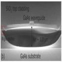 |
Suspended gallium arsenide platform for building large scale photonic integrated circuits: passive devices
Pisu Jiang and Krishna C. Balram
Optics Express (2020)
Summary: The spectacular success of silicon-based photonic integrated circuits (PICs) in the past decade naturally begs the question of whether similar fabrication procedures can be applied to other material platforms with more desirable optical properties. In this work, we demonstrate the individual passive components (grating couplers, waveguides, multi-mode interferometers and ring resonators) necessary for building large scale integrated circuits in suspended gallium arsenide (GaAs).
|
|
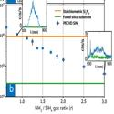 |
Single photon emission and single spin coherence of a nitrogen vacancy center encapsulated in silicon nitride
Joe Smith, Jorge Monroy-Ruz, John Rarity and Krishna C. Balram
Applied Physics Letters (2020) Editor's Pick
Summary: Finding the right material platform for engineering efficient photonic interfaces to solid state emitters has been a long-standing bottleneck for scaling up solid state quantum systems. In this work, we demonstrate that nitrogen rich silicon nitride, with its low auto-fluorescence at visible wavelengths, is a viable quantum photonics platform by showing that nitrogen vacancy centers embedded in nanodiamonds preserve both their quantum optical and spin properties post-encapsulation.
|
|
|
Microwave-to-Optical Transduction Using a Mechanical Supermode for Coupling Piezoelectric and Optomechanical Resonators
Marcelo Wu, Emil Zeuthen, Krishna C. Balram and Kartik Srinivasan
Physical Review Applied (2020)
Summary: Spurred by recent developments in quantum information, there has been a lot of interest in the development of quantum transducers for efficient, low-noise, and bidirectional frequency conversion of photons between the microwave and optical domains. We propose to realize such functionality through the coupling of electrical, piezoelectric, and optomechanical resonators. The coupling of the mechanical subsystems enables formation of a resonant mechanical supermode that provides a mechanically mediated, efficient single interface to both the microwave and optical domains.
|
|
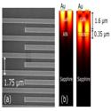 |
High frequency guided mode resonances in mass-loaded, thin film gallium nitride surface acoustic wave devices
Stefano Valle, Manikant Singh, Martin Cryan, Martin Kuball and Krishna C. Balram
Applied Physics Letters (2019) Editor's Pick
Summary: We demonstrate high-frequency (>3 GHz), high quality factor radio frequency (RF) resonators in unreleased thin film gallium nitride (GaN) on sapphire and silicon carbide substrates by exploiting acoustic guided mode (Lamb wave) resonances. The GaN platform, with its ability to guide and localize high-frequency sound on the surface of a chip with access to high-performance active devices, will serve as a key building block for monolithically integrated RF front-ends.
|
|
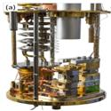 |
Elimination of thermomechanical noise in piezoelectric optomechanical crystals
Hugh Ramp, Bradley Hauer, Krishna C. Balram, et al.
Physical Review Letters (2019)
Summary: we eliminate thermomechanical noise in the GHz-frequency mechanical breathing mode of a piezoelectric optomechanical crystal using cryogenic cooling in a dilution refrigerator. We optically measure an average thermal occupancy of the mechanical mode of only
0.7 ± 0.4 phonons, providing a path towards low-noise microwave-to-optical conversion in the quantum regime.
|
|
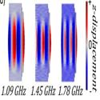 |
High-frequency, resonant acousto-optic modulators fabricated in a MEMS foundry platform
Stefano Valle and Krishna C. Balram
Optics Letters (2019)
Summary: We report the design and characterization of high-frequency, resonant acousto-optic modulators (AOMs) in a micro-electro-mechanical systems (MEMS) foundry process. The doubly resonant cavity design, with short acoustic and optical cavity lengths, allows us to measure acousto-optic modulation at GHz frequencies with high modulation efficiency. In contrast to traditional AOMs, these devices rely on the perturbation induced by the displacement of cavity boundaries, which can be significantly enhanced in a suspended geometry.
|
|
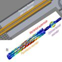 |
The 2019 surface acoustic waves roadmap: Cavity optomechanics with surface acoustic waves
Kartik Srinivasan, Marcelo Wu and Krishna C. Balram
Journal of Physics D: Applied Physics (2019)
Summary: We summarize the opportunities and potential roadblocks presented by the adoption of piezoelectric material platforms for cavity optomechanics.
|
|
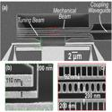 |
Tuning and stabilization of optomechanical crystal cavities through NEMS integration
Karen E. Grutter, Marcelo I. Davanco, Krishna C. Balram, and Kartik Srinivasan
APL Photonics (2018) Invited article
Summary: We demonstrate the electrostatic tuning and stabilization of optomechanical devices, by integrating a Si3N4 slot-mode optomechanical crystal cavity with a nanoelectromechanical systems element, which controls the displacement of an additional “tuning” beam within the optical near-field of the optomechanical cavity.
|
|
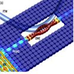 |
Acousto-Optic Modulation and Optoacoustic Gating in Piezo-Optomechanical Circuits
Krishna C. Balram, Marcelo I. Davanço, B. Robert Ilic, Ji-Hoon Kyhm, Jin Dong Song, and Kartik Srinivasan
Physical Review Applied (2017)
Summary: We extend our prior work on piezo-optomechanical circuits by studying dynamical effects in these circuits. We demonstrate acousto-optic modulation and optoacoustic gating (the inverse effect), in which the application of modulated optical pulses interferometrically gates the transmission of propagating acoustic pulses.
|
|
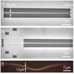 |
Efficient fiber-coupled single-photon source based on quantum dots in a photonic-crystal waveguide
Raphaël S. Daveau, Krishna C. Balram, et al.
Optica (2017)
Summary: We demonstrate an efficient fiber-coupled photonic-crystal waveguide (PCWG) based single-photon source by optimizing the evanescent coupling of the light field between the tapered waveguide and a tapered optical fiber. The coupling is robust, stable, and broadband.
|
|
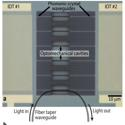 |
Coherent coupling between radiofrequency, optical and acoustic waves in piezo-optomechanical circuits
Krishna C. Balram, Marcelo I. Davanço, Jin Dong Song, and Kartik Srinivasan
Nature Photonics (2016)
Summary: We develop a platform for nanoscale cavity optomechanical circuits in which optomechanical cavities supporting co-localized 1,550 nm photons and 2.4 GHz phonons are combined with photonic and phononic waveguides.
|
|
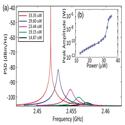 |
Moving boundary and photoelastic coupling in GaAs optomechanical resonators
Krishna C. Balram, Marcelo I. Davanço, Ju Young Lim, Jin Dong Song, and Kartik Srinivasan
Optica (2014)
Summary: We develop GaAs optomechanical resonators and investigate the relative contributions of moving dielectric boundaries and the photoelastic effect to the optomechanical coupling rate.
|
|
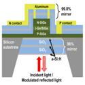 |
Surface-Normal Ge-SiGe Asymmetric Fabry–Perot Optical Modulators Fabricated on Silicon Substrates
Ross M. Audet, Elizabeth H. Edwards, Krishna C. Balram et al.
IEEE Journal of Lightwave Technology (2013)
Summary: We demonstrate the first vertical-incidence Ge-SiGe quantum well reflection modulators fabricated entirely on standard silicon substrates. These modulators could help enable massively parallel, free-space optical interconnects to silicon chips.
|
|
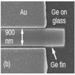 |
Nanoscale resonant-cavity-enhanced germanium photodetectors with lithographically defined spectral response for improved performance at telecommunications wavelengths
Krishna C. Balram, Ross M. Audet, and David A. B. Miller
Optics Express (2013)
Summary: We demonstrate the use of a subwavelength planar metal-dielectric resonant cavity to enhance the absorption of germanium photodetectors at wavelengths beyond the material’s direct absorption edge, enabling high responsivity across the entire telecommunications C and L bands.
|
|
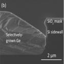 |
Selective area growth of germanium and germanium-silicon-germanium quantum wells in silicon waveguides for on-chip optical interconnect applications
S. A. Claussen, Krishna. C. Balram, E. T. Fei, T. I. Kamins, J. S. Harris, and D. A. B. Miller
Optical Materials Express (2012)
Summary: We propose a robust fabrication process for growing Ge and Ge-based heterostructures in growth windows with Si sidewalls which can be applied to growth in thick Si optical waveguides.
|
|
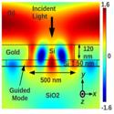 |
Self-aligned silicon fins in metallic slits as a platform for planar wavelength-selective nanoscale resonant photodetectors
Krishna C. Balram, and David A. B. Miller
Optics Express (2012)
Summary: We propose and demonstrate a novel nanoscale resonant metal-semiconductor-metal (MSM) photodetector structure based on silicon fins self-aligned to metallic slits. This geometry allows the center wavelength of the photodetector’s spectral response to be controlled by the silicon fin width, allowing multiple detectors, each sensitive to a different wavelength, to be fabricated in a single-step process.
|
|
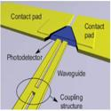 |
Routing and photodetection in subwavelength plasmonic slot waveguides
Dany-Sebastien Ly-Gagnon, Krishna C. Balram, et al.
Nanophotonics (2012)
Summary: We demonstrate a photodetector linked to a two conductor metallic slot waveguide that supports a mode with a minute cross-sectional area of λ^2/100 and propagation lengths of 10λ (λ = 850 nm).
|
|
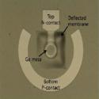 |
Strained germanium thin film membrane on silicon substrate for optoelectronics
Donguk Nam, Devanand Sukhdeo, Arunanshu Roy, Krishna C. Balram, et al.
Optics Express (2011)
Summary: We present a novel method to introduce a sustainable biaxial tensile strain larger than 1% in a thin Ge membrane using a stressor layer integrated on a Si substrate.
|
|
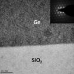 |
Tensile-strained germanium-on-insulator substrate fabrication for silicon-compatible optoelectronics
J. Raja Jain, Dany-Sebastien Ly-Gagnon, Krishna C. Balram, et al.
Optical Materials Express (2011)
Summary: We present a method to fabricate tensile-strained germanium-on-insulator (GOI) substrates using heteroepitaxy and layer transfer techniques
|
|
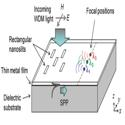 |
Multiple-Wavelength Focusing of Surface Plasmons with a Nonperiodic Nanoslit Coupler
Takuo Tanemura, Krishna C. Balram, et al.
Nano Letters (2011)
Summary: An array of nanoslits patterned on a thin metal film is used to couple free-space light into surface plasmon polaritons (SPPs) and simultaneously focus different-wavelength SPPs into arbitrary predefined locations in the two-dimensional plane.
|
|